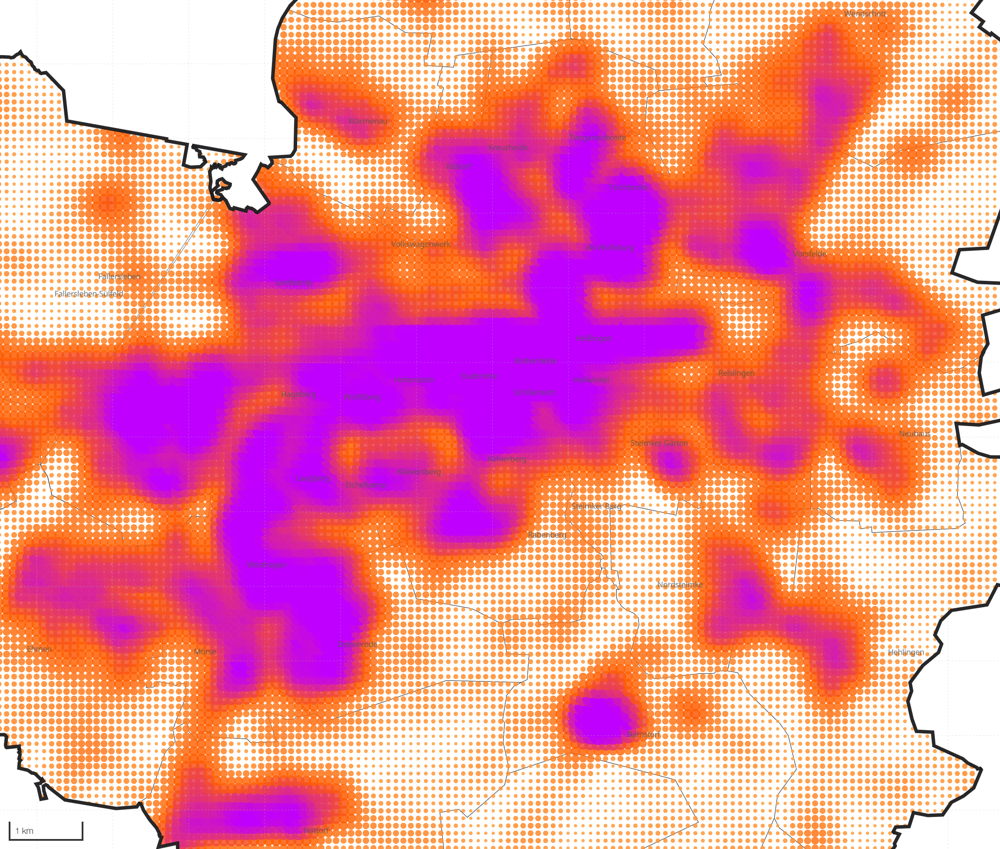
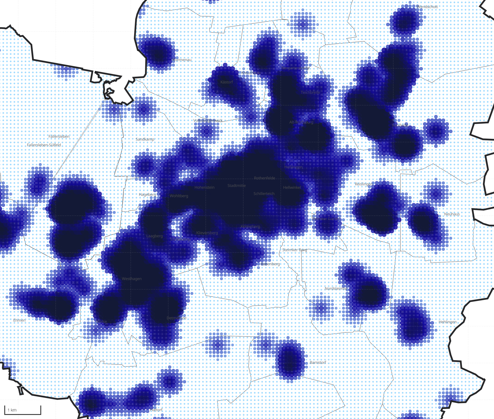
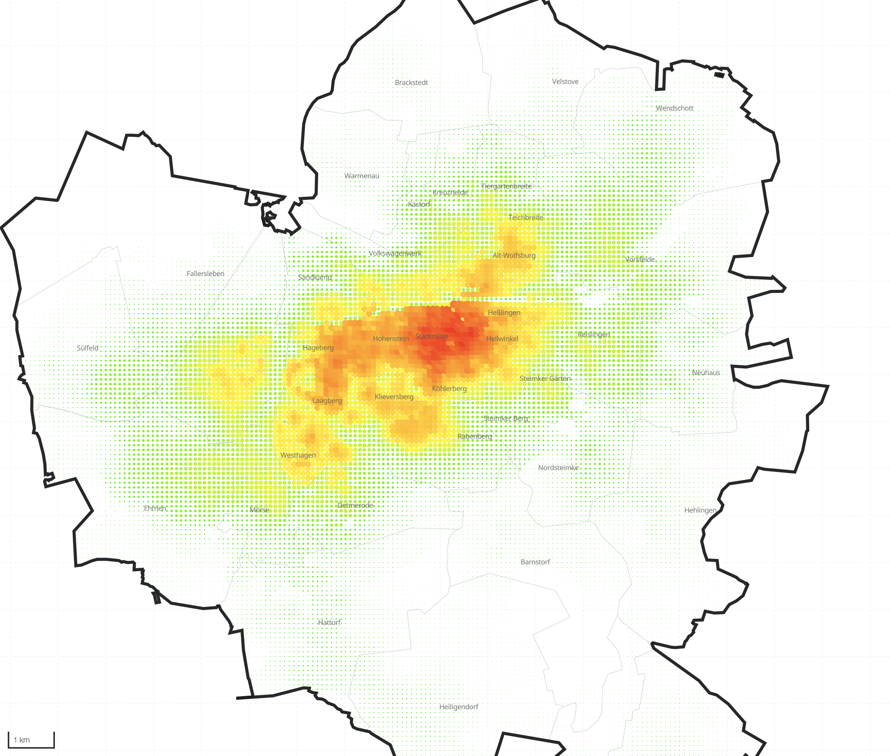

02(History)


Wolfsburg · a post-car future · Summaery 2026
PARKING CITY → HUB CITY
Urban Design Studio — Wolfsburg Future Mobility · Bauhaus-Universität Weimar
Ömer Faruk Aslan · Anastasiia Mulyndina · Başak Pınar



All transport intensity converges on one dominant core — the gravitational pull of the Werk. The periphery orbits it.
Wolfsburg Activity Map · annestasiia.github.io/wolfsburg-activity-mapAccessed, not owned — one vehicle serves many people instead of sitting idle 23 hours a day.
No driver cost — frequent, on-demand service becomes viable even in the low-density periphery.
Charged at the hubs, centrally managed — zero tailpipe emissions in the city.
1,270 shared vehicles serve the whole centre — one shared vehicle does the work of dozens of parked ones.
Every front door within a short walk of one.

 Hub network
Hub network

 Before
After
Before
After
BeforeThirty minutes in traffic every morning. A new car every three years.
AfterAn autonomous bus from the L-hub to the factory gate in 18 minutes. He helps build the fleet — and rides it.


PARKING CITY → HUB CITY
<stadt.hub> · Bauhaus-Universität Weimar · M.Sc. IUDD · SoSe 26
Ömer Faruk Aslan · Anastasiia Mulyndina · Başak Pınar
ofa5406.github.io/wolfsburg